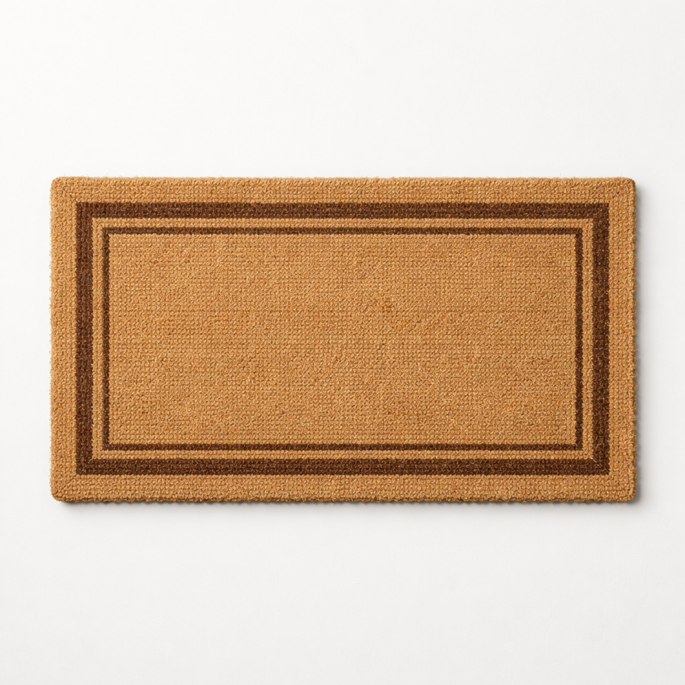

Image slot
Weather-ready coir mat
Practical pick
Under $40
Weather-ready coir mat
Entry edit
A straightforward mat that makes the entry feel anchored and catches grit before it travels inside.
One of the fastest ways to make an entry feel intentional without adding visual clutter.
Choose a plain edge and a deep neutral color so it still looks good when the weather changes.
EntryPracticalLow effort
Browse on Amazon